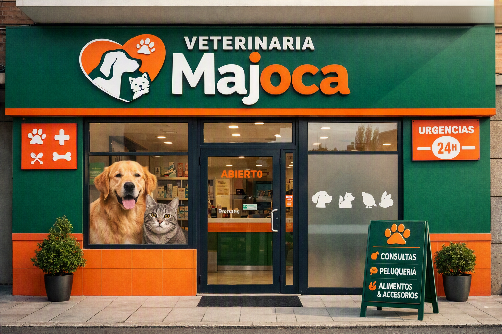
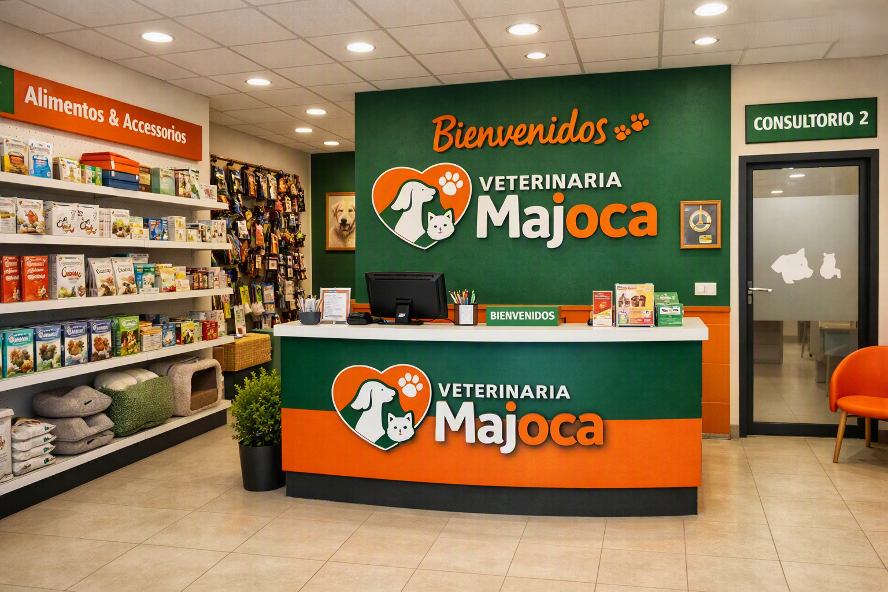

Nosotros
MAJOCA nació del amor profundo hacia los animales y del sueño de ofrecer un cuidado veterinario cercano, humano y de calidad. Desde nuestros primeros pasos, hemos acompañado a familias que buscan más que un servicio: desean un aliado que entienda la importancia de cada vida peluda. Con el tiempo, hemos construido una comunidad basada en la confianza, la dedicación y la pasión por la salud animal. Hoy, seguimos creciendo con el mismo propósito que nos inspiró desde el inicio: brindar bienestar y cariño a quienes nos enseñan cada día el verdadero significado de la lealtad.

Catálogo
En nuestro catálogo encontrarás una amplia gama de servicios veterinarios diseñados para satisfacer las necesidades de tus mascotas. Desde consultas generales hasta procedimientos especializados, cada servicio está pensado para garantizar la salud y el bienestar de tus animales. Explora nuestras opciones y descubre cómo podemos ayudarte a cuidar de tus compañeros peludos con la atención que merecen.
- Servicio de consulta general
- Procedimientos quirúrgicos
- Vacunación y desparasitación
- Exámenes de laboratorio
- Atención de emergencias
- Transporte en caso de urgencias
- Cuidado y estética

Suscripciones
Descubre nuestros planes y precios diseñados para ofrecer el mejor cuidado veterinario sin comprometer tu presupuesto.
| Plan | Servicios Incluidos | Precio Sugerido |
|---|---|---|
| Bienestar Esencial |
- Consultas ilimitadas - Vacunación básica y desparasitación - Descuento en estética y medicinas del 30% |
$19.900 COP |
| Protección Completa |
- Consultas ilimitadas - Vacunación y desparasitación completas - Exámenes de laboratorio básicos - 1 servicio de estética mensual - Descuento en todos nuestros servicios del 50% |
$39.900 COP |
| Cuidado Total |
- Consultas ilimitadas - Vacunación y desparasitación completas - Descuento en procedimientos quirúrgicos - Exámenes de laboratorio avanzados - Emergencias y transporte - Estética mensual completa |
$59.900 COP |
Contacto
Tu mascota merece la mejor atención. Escríbenos y estaremos felices de ayudarte.